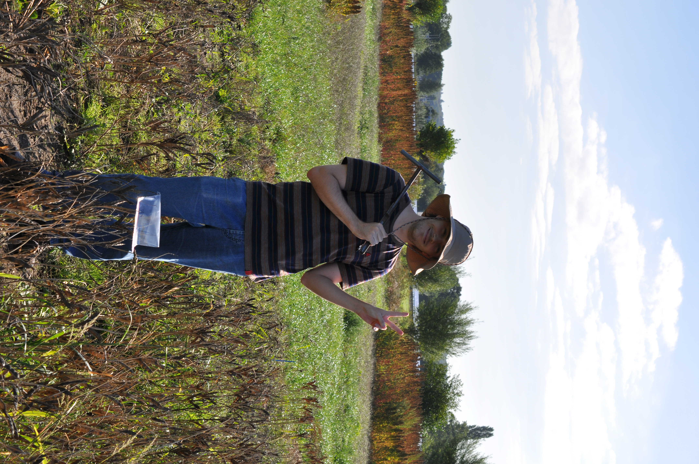

Hi, I am Lucas !
My interest in biology probably stems from spending my youth helping out my grandfather in his vegetable garden and growing up in a countryside surronded by endless wild flora. This fascination for plants and their cultivation led me to pursue a Bachelor and a Master in Bioengineering in Agricultural Sciences at Gembloux Agro-Bio Tech (University of Liège). After graduating, I briefly worked as a research assistant at their Plant Genetics and Rhizosphere Processes Laboratory, where I developed a much stronger interest for belowground interactions. I am now continuing my research journey as a PhD candidate, studying the impact of novel protein crops on soil functions at Wageningen University.
Besides the academic grind, I am also a plant nerd who likes to keep learning about nature and share fun facts about the plant world! I am also currently enrolled as a volunteer at the Hortus in Amsterdam and the Botanical Gardens of the University of Utrecht.
My current research topic
In June 2026, I joined the work package “Soil biodiversity and functioning” of the REAP2SOW project. This stands for “Resilient and Efficient Agricultural Proteins to Sustain Our World”, a Dutch initiative that aims to develop sustainable, climate-resilient food systems by promoting novel protein crops that are not yet widely used in Europe (including quinoa, white lupin, and tuberous pea). Still very little is known about the impact these new crops could have on our agricultural soils. My research specifically looks at the role of their root exudates and residues in soil organic matter build-up and other soil properties, combining on farm and greenhouse trials. In close collaboration with Kimber Zonneveld, another doctoral researcher based at Leiden University focusing on their related microbiome, we aim to elucidate (some of) their well-hidden belowground dynamics to assess the opportunities and challenges of their implementation in Dutch cropping systems. More about this work here.
About this website
On this website, you’ll find a page dedicated to my scientific CONTRIBUTIONS with regular updates on my research project, a space on plant-soil related SCIENCE COMMUNICATION where you can find small literature reviews of key concepts and conference related content, a BLOG where I share more personal (but still pretty much plant-related) stuff, and a photo GALLERY to highlight some work-related moments.
Latest news
Started my PhD at the Soil Biology & Soil Geography and Landscapes Groups, Wageningen University
I joined the REAP2SOW project as a doctoral researcher, working on plant-soil interactions in novel protein crops.
First scientific publication out in Environmental Research: Food Systems (IOP Science)
Very proud to announce that my first-ever scientific paper has been published in the context of the SEA2LAND H2020 Project ♻️🥦. This work feels particularly special to me, as it grew out of my master's thesis at the TERRA-Ecotron and my research assistantship at the University of Liège. DOI 10.1088/2976-601X/ae2d5b.